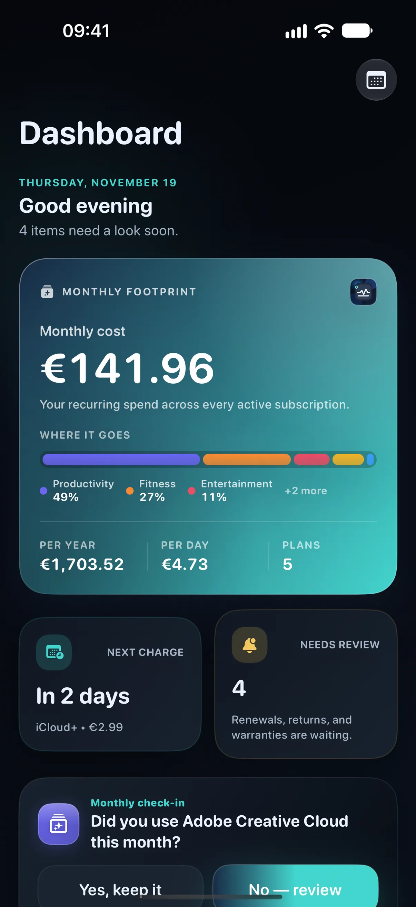
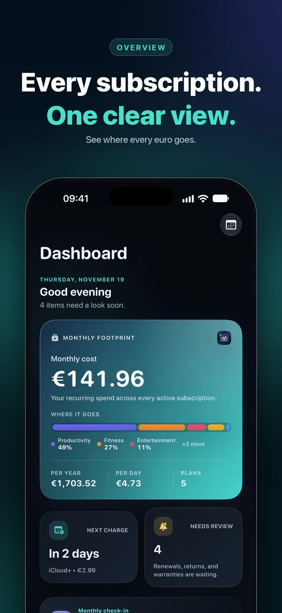
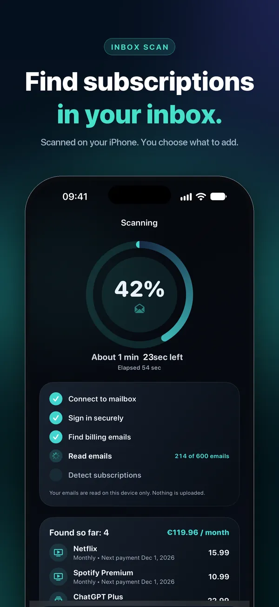
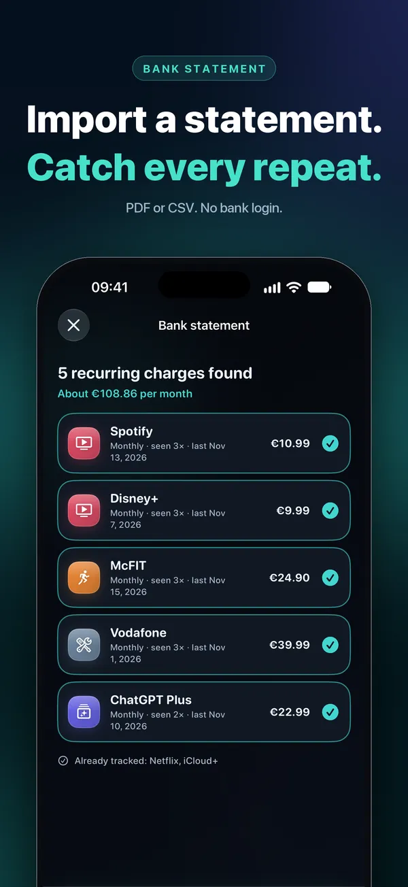
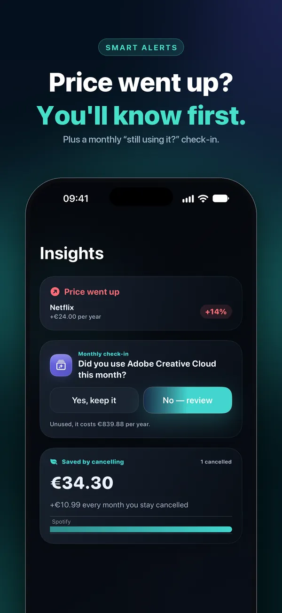
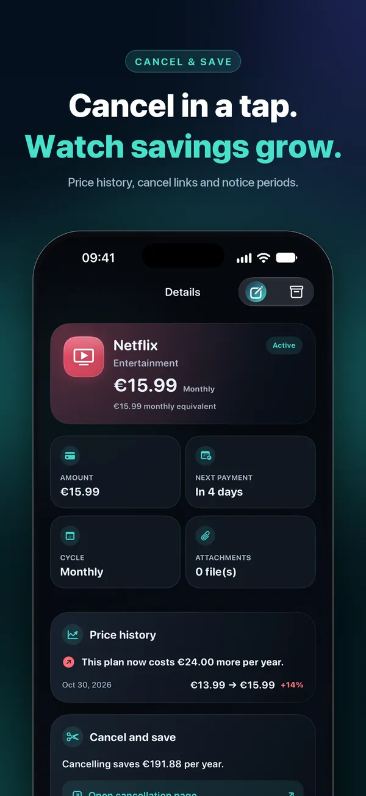
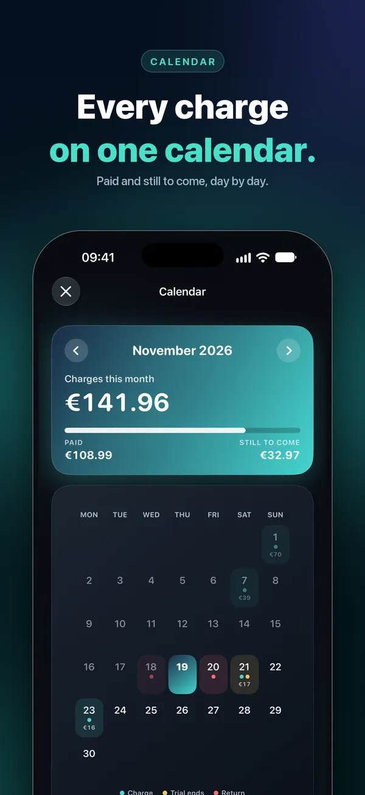
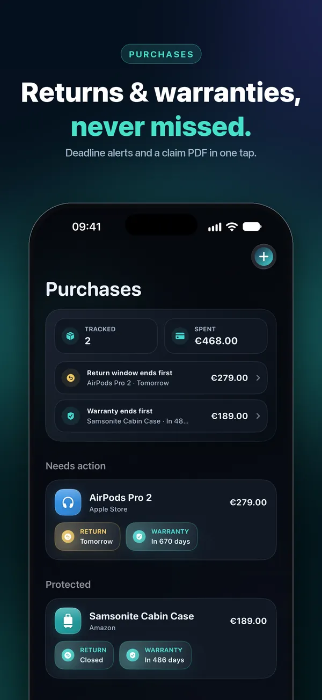
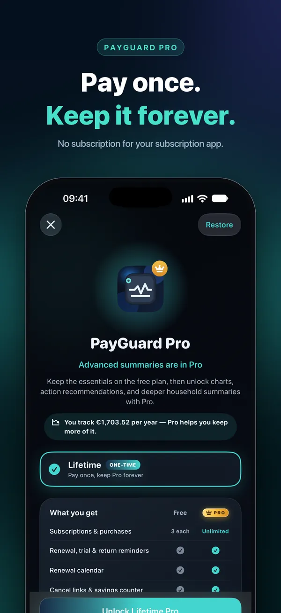

Inbox scan
Connect a mailbox and PayGuards reads billing emails on your iPhone. It finds active plans, spots cancelled ones and lets you choose what to add.
SUBSCRIPTIONS · WARRANTIES · RETURNS
PayGuards finds your subscriptions in your inbox and bank statements, warns you before prices rise or a cancel-by deadline passes, and keeps warranties and return windows in the same place. No bank login, nothing leaves your iPhone.
Free for up to 3 subscriptions and 3 purchases. Pro is a single one-time purchase.

Connect a mailbox and PayGuards reads billing emails on your iPhone. It finds active plans, spots cancelled ones and lets you choose what to add.
Pick a PDF or CSV statement from your banking app. Recurring charges are found on the device — no bank login, ever.
When a plan gets more expensive you know first. A monthly “still using it?” check-in shows what you could stop paying for.
See past and upcoming charges day by day. Notice periods for contracts, gyms and mobile plans remind you before the last day to cancel.
Keep receipts with every purchase, track return windows and warranty end dates, and export a claim PDF when you need it.
Data stays on your device, with optional iCloud sync through your own private iCloud. Pay once — Pro is yours forever, no subscription.








Get in touch directly for product and privacy questions.